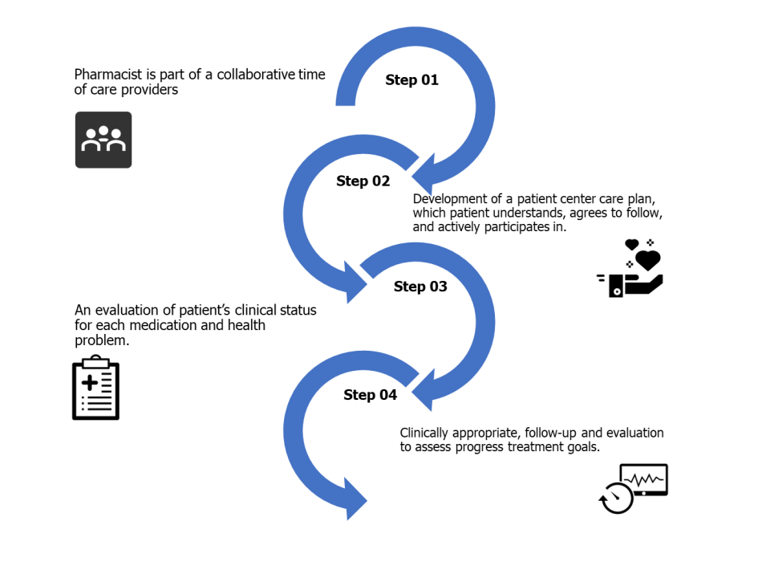

Getting Started - An introduction to our systematic reviews
Seyram A. Butame
Division of Chronic Disease and Injury Prevention
Agenda
- A brief round of introductions
- Review of the protocol
- Review of the project timeline
- Questions on the project
- Training on SysRev Platform
- Establishing concordance
Protocol Review - Introduction
- Division of Chronic Disease and Injury Prevention
- Efforts to improve overall health of adults in LA County
- Part of a broader Chronic Disease Prevention and Management Strategy (CDPMS)
- We want effective, innovative interventions.
- Comprehensive medication management fits that bill.
Comprehensive Medication Management
Why Take It On
- Evolving health care methods
- Several policy drivers

- Increasing costs of health care
- An environment supporting collaborative drug therapy models (CDTM)
- All leading to medication therapy management (MTM)
More on CMM
- Help structure the research question.
- Capture key elements of the process.
CMM is different

Why Chronic Diseases (i.e., Hypertension)?
- Chronic diseases impact significat portion of population.
- High economic and social burdens.
- Hypertension is a starting point.
- A risk factor for other diseases.
- A significant issue on its own.
Why a Systematic Review
- There is increasing uptake of CMM interventions.
- The novelty means there are discrepancies in implementation and results.
- A systematic review helps to "identify, evaluate, and summarize", existing infomration.
What is the purpose of a Systematic Review?
Review Aims
A systematic review to investigate the effects of pharmacist-led CMM interventions on health-related outcomes (i.e., therapeutic, safety, and humanistic) and on economic outcomes in the United States.
Review Objectives
- Understand extent of CMM use
- Understand the effectiveness of CMM interventions
- Understand the costs associated with CMM
- Guide our own policy work
Steps in a Systematic Review
- Question formulation
- Protocol development
- Database searching
- Data extraction
- Appraisal
- Data sysnthesis
- Reporting (peer review journals/ official reports)
Databases and Search Strategy
Databases Searched
- MEDLINE
- CINAHL
- The Cochrane Library
- EMBASE
Strategy Example

MEDLINE alone will produce over 100 citations/references. Between all four, we expect a corpus with at least 200 citations/refrences to be screened.
Project Tools
Reference Management
- Keeping track of citations and references
- Identifying and stripping corpus of duplicates
Screening and Data Extraction
- Supports screening citations, full-text reviews
- Supports data extraction and some analysis
Next Steps and the coming weeks
State of the project
- Protocol is complete
- Review is registered
- Search strategy is finalized
- In process of pulling citations
As a collaborator
- Screen titles/abstracts of the corpus
- Screen full-text
- Data-extraction to begin in the summer
What does it mean to screen?
Project Notes and Information
Any Questions
What is our Timeline
Preparing for nxt week
During the next session
After Training
Thank you!